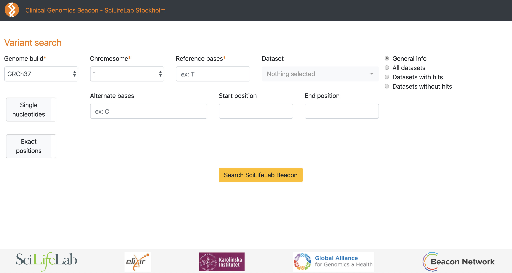

Beacon endpoints and queries
Server endpoints
- /. General info regarding this Beacon, including a description of its datasets, API version, sample count etc, can be obtained by sending a GET request using the following shell command:
curl -X GET 'http://localhost:5000/apiv1.0/'
Demo beacon will reply to this request with a JSON object like this:
{"alternativeUrl":null,"apiVersion":"v1.0.0","createDateTime":"Tue, 23 Jun 2020 14:33:52 GMT","datasets":[{"assembly_id":"GRCh37","callCount":483,"created":"Tue, 23 Jun 2020 14:33:52 GMT","id":"test_public","info":{"accessType":"PUBLIC"},"name":"Test public dataset","sampleCount":1,"updated":"Tue, 23 Jun 2020 14:33:53 GMT","variantCount":408,"version":1.0}],"description":"Beacon description","id":"SciLifeLab-beacon","name":"SciLifeLab Stockholm Beacon","organisation":{"address":"","contactUrl":"","description":"A science lab","id":"scilifelab","info":[],"logoUrl":"","name":"Clinical Genomics, SciLifeLab","welcomeUrl":""},"sampleAlleleRequests":[{"alternateBases":"A","assemblyId":"GRCh37","datasetIds":["test_public"],"includeDatasetResponses":"HIT","referenceBases":"C","referenceName":"1","start":156146085},{"assemblyId":"GRCh37","includeDatasetResponses":"ALL","referenceBases":"C","referenceName":"20","start":54963148,"variantType":"DUP"}],"updateDateTime":"Tue, 23 Jun 2020 14:33:53 GMT","version":"v1.1","welcomeUrl":null}
- /query. Query endpoint supports both GET and POST requests. Example of a GET request:
curl -X GET \
'http://localhost:5000/apiv1.0/query?referenceName=1&referenceBases=C&start=156146085&assemblyId=GRCh37&alternateBases=A'
Example of a POST request:
curl -X POST \
-H 'Content-Type: application/json' \
-d '{"referenceName": "1",
"start": 156146085,
"referenceBases": "C",
"alternateBases": "A",
"assemblyId": "GRCh37",
"includeDatasetResponses": "HIT"}' http://localhost:5000/apiv1.0/query
The Beacon reply to a query of this type would be a json object where the "exist" key will be true if the allele is found, otherwise it will be false.
{"allelRequest":{"alternateBases":"A","assemblyId":"GRCh37","datasetIds":[],"includeDatasetResponses":"NONE","referenceBases":"C","referenceName":"1","start":"156146085"},"apiVersion":"1.0.0","beaconId":"SciLifeLab-beacon","datasetAlleleResponses":[],"error":null,"exists":true}
Web interface
A simple web interface to perform interactive queries can be used by typing the following address in any browser window: http://127.0.0.1:5000/apiv1.0/query_form

At the moment this interface is disconnected with Elixir AAI so all queries will be limited to the available public datasets in the Beacon.
Advanced queries
Required parameters
assemblyId: Genome build (GRC notation, example: GRCh37).referenceName: Chromosome name () 1-22, X, Y, MT).referenceBases: Reference bases for a variant. Accepted values:[ACGT]*.start: Precise start coordinate position, allele locus (0-based).startcoordinate:- for single positions, in general for retrieving information on SNVs and InDels.
- the use of
startwithout anendparameter requires the use ofreferenceBases.
startandendcoordinates:- In general used to retrieve information for structural variants where start and end exact positions are known.
startMin: Minimum start coordinate- for querying imprecise positions, for instance when a structural variants is suspected to have a breakpoint within a
startMinandstartMaxinterval. Similarly variants with the other breakpoint ending in another interval can be found by specifyingendMinandendMaxcoordinates.
- for querying imprecise positions, for instance when a structural variants is suspected to have a breakpoint within a
startMax: Maximum start coordinate. SeestartMin.end: Precise end coordinate (0-based, exclusive). Seestart.endMin: Minimum end coordinate. SeestartMin.endMax: Maximum end coordinate. SeestartMin.
Either Start and/or End coordinates or range coordinates must be specified in the query.
Additional optional parameters
variantType: is used especially to query structural variants. Examples: SNV, DEL, DUP, BND ..alternateBases: The bases that appear instead of the reference bases. Accepted values:[ACGT]*
Either alternateBases or variantType is required in all queries
datasetIds: specific dataset IDs to search in. If this parameter is not provided then all datasets of a beacon will be searched.includeDatasetResponses: whether if the beacon should return a dataset-specific response or a simple yes/no reply. Accepted values:ALL: return a specific result from all available datasets in the beacon.HIT: return a specific result from from all dataset where there is a positive match for the variant.MISS: return a specific result from from all dataset where the variant was not found.NONE: do not include dataset-specific info in the request. The same type of request is obtained whenincludeDatasetResponsesparameter is not provided.
The advantage of including includeDatasetResponses in query is that in case of positive match, other useful statistics will be returned at the dataset level, such as variantCount, callCount and sampleCount.
This is an example of a positive match response from this beacon populated with demo data:
{"allelRequest":{"alternateBases":"A","assemblyId":"GRCh37","datasetIds":[],"includeDatasetResponses":"HIT","referenceBases":"C","referenceName":"1","start":156146085},"apiVersion":"1.0.0","beaconId":"SciLifeLab-beacon","datasetAlleleResponses":[{"callCount":1,"datasetId":"test_public","exists":true,"info":{"accessType":"PUBLIC"},"sampleCount":1,"variantCount":1}],"error":null,"exists":true}